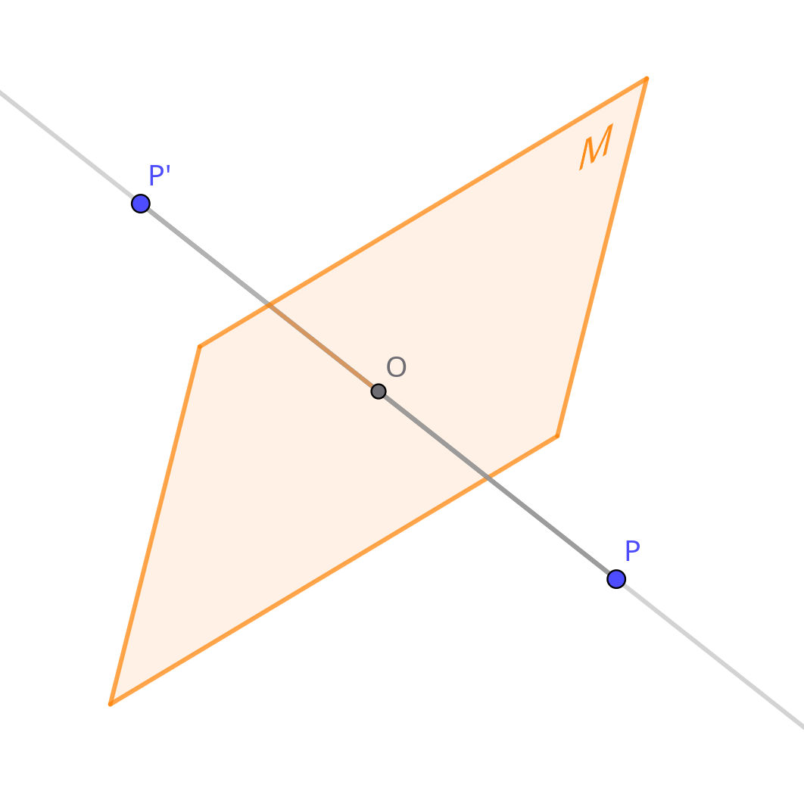

Wir beginnen mit dem Dreispiegelungssatz, denn der der Beweis für den Vierspiegelungssatz baut auf diesem auf.
Lies dir den ersten Beweis am besten einmal ganz durch und lass dich darauf ein um einen Überblick zu bekommen, und schau dir danach jeden Schritt nochmal einzelni genauer an.
Dreispiegelungssatz
Der Dreispiegelungssatz sagt aus, dass jede ursprungserhaltende Kongruenzabbildung des Raumes auf sich durch eine Verkettung von maximal 3 Ebenenspiegelungen ersetzt werden kann.
Also: Jede noch so lange und scheinbar komplexe Abfolge von Drehen, Spiegeln und Verschieben kann durch nur höchstens 3 Ebenenspiegelungen dargestellt werden, solange dabei der Ursprung dort bleibt, wo er vorher war (solange er ein Fixpunkt der Abbildung ist).
1.
Es sei f eine Ursprungserhaltende Abbildung des Raumes auf sich, die jedem Urpunkt P auf einen Bildpunkt P' abbildet.
(Von dieser beliebigen Abbildung versuchen wir zu beweisen, dass sie equivalent zu maximal 3 Ebenenspiegelungen ist)
2.
Wir können uns eine Spigelung an einer Mittelebene zwischen einem Urpunkt P und seinem Bildpunkt P' denken, die per Ebenenspiegelung dieses P auf P' spiegelt (wir platzieren einfach nur einen Spiegel zwischen die beiden Punkte).
Wir nennen diese Mittelebene M, und die Spiegelung an ihr SM.
3.
Weil P und P' jeweils den selben Abstand zum Urpsprung O haben (das ist immer der Fall in Ursprungserhaltenden kongruenzabbildungen), muss M durch O gehen.
(Denn der Spiegel M ist die Menge aller Punkte, die genau den Selben Abstand von P und P' haben, und O ist ja perfekt in der Mitte von den Beiden.)

4.
Es folgt, dass die Verkettung von f und SM mindestens zwei Fixpunkte hat; O und P.
(P ist fix, denn f bildet P auf P' ab, was die Mittelebenenspiegelung wieder umkehrt)
(O ist fix, weil O ja per definition ein Fixpunkt bei f ist, und durch SM verändert es sich auch nicht, weil O ja schon auf der Mittelebene M liegt)
Diese Verkettung notieren wir als f ∘ SM
5.
Es folgt, dass dann die gesamte Gerade OP bei f ∘ SM fix ist.
(Denn für jeden Punkt dieser Gerade kann man gleich argumentieren, wie für P)
6.
Die Kongruenzabbildungen des Raumes, die eine Gerade fix lassen, sind...
- Drehung
- Ebenenspiegelung
- Identität
Und wir wissen; jeder dieser Abbildungen kann durch maximal 2 Ebenenspiegelungen dargstellt werden.
Also:
f ∘ SM ≙ Maximal 2 Ebenenspiegelungen
7.
SM ∘ SM ≙ Identität
(Wir spiegeln und spiegeln dann wieder zurück, bekommen also das gleiche raus)
Daraus folgt:
f = f ∘ (SM ∘ SM)
(Eine Abbildung verkettet mit der Identität ist immer einfach gleich zur Abbildung)
Und weil Ebenenspiegelungen Kommutativ sind (also die Reihenfolge egal ist), können wir das Umstellen zu:
f = SM ∘ (f ∘ SM)
Und hier wissen wir vom Term in der Klammer, dass er equivalent zu maximal 2 Ebenenspiegelungen ist (das haben wir ja oben gezeigt).
Und entsprechend ist die Verkettung davon mit einer weiteren Ebenenspiegelungen equivalent zu einer Verkettung von maximal 3 Ebenenspiegelungen.
Damit ist gezeigt, dass f durch maximal 3 Ebenenspiegelungen ersetzbar ist. q.e.d.
Vierspiegelungssatz
Der Vierspiegelungssatz ist nun die Ergänzung, wonach jede Kongruenzabbildung (also auch solche, die nicht ursprungserhaltend sind) des Raumes auf sich durch maximal 4 verkettete Ebenenspiegelungen ersetzt werden kann.
Der Gedanke hier ist ganz einfach:
Wir können durch eine einzige Ebenenspiegelung, einen jeden beliebibigen Punkt dorthin bewegen wo wir ihn wollen (wie sich alles andere dabei verändert ist uns erstmal egal).
Wenn wir also eine Kongruenzabbildung haben, die den Ursprung bewegt, dann braucht es nur eine Ebenenspiegelung, um den Ursprung zurück dorthin zu bewegen, wo er vorher war.
Was uns dann übrig bleibt ist eine Ursprungserhaltende Abbildung, und die beherrschen wir ja schon durch den Dreispiegelungssatz.
Und damit ist das Problem bereits gelöst; Jede Kongruenzabbildung im Raum kann durch maximal eine Ebenenspiegelung auf eine ursprungserhaltende Kongruenzabbildung reduziert werden, und jede urpsungserhaltende Kongruenzabbildung ist durch maximal 3 Ebenenspiegelungen ersetzbar.
1 + 3 = 4 q.e.d.